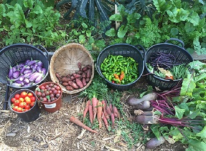

The joy of harvesting your garden vegetables is about more than just the act of picking produce;
it's about nurturing a deep connection to the earth, to your food, and to yourself.
It's a celebration of life, growth, and the simple pleasures that nature provides.